TiDB 读写流程相关监控原理解析
通常来说，监控存在的意义是帮助我们定位系统的瓶颈和异常。不管是常规巡检还是异常问题排查，系统的瓶颈主要会出现在 CPU、内存、网络、磁盘，而每个瓶颈又有不同的横向维度，比如磁盘的 IOPS、吞吐量、延迟、抖动，所以 TiDB 存在大量的监控。本节将会从 TiDB 读写流程的角度，介绍各部分的关键监控。
为了保持行文连贯，不会插入大量的监控面板的图作为辅助解释，取而代之的是会更加详细的解释：
- 为什么需要这个监控？
- 这个监控在什么情况下会记录？
- 如果这个监控的值出现了异常，反应的是系统哪一方面的瓶颈？
希望读者对监控理解之后，不仅可以看懂监控，还可以举一反三，能对监控的表达式按照自己想要的结果进行调整。
读流程
如前文所述，对于一个读取的 SQL，需要将 TiKV 获取到的 KV 键值对转换为用户期望的 Schema 的关系型数据。可以对这一句话使用问题的方式进行展开：
- TiKV 如何存取 KV 键值对？
- TiKV 如何知道需要获取哪些 KV 键值对？
- TiDB 如何构造这些请求？
- TiDB 拿到 KV 键值对之后如何根据 Schema 返回数据？
- TiDB 如何把最终数据返回给客户端？
希望读者可以根据以上问题阅读后续内容，同时在阅读完以后在回顾问题加深理解。接下来的内容会按照自底向上的方式来回答以上问题，并分析监控存在的必要性以及监控和实际执行过程的关联关系。
TiKV 如何获取键值对
TiKV 底层使用 RocksDB 存储引擎，TiKV 中处理 Query 相关的所有 KV 读取都是基于 RocksDB 的 Snapshot，Snapshot 是 RocksDB DB 实例某一个时间点的视图，可以通过 Snapshot 上的 Get 接口获取单个 KV，也可以通过获取 Iterator 来扫描一个范围。
Point-lookup: Get(key)
比如下图查找 “P”，需要从 L0 向下遍历每一层文件直到找到对应的 value：
- 从 Memtable 从查找，如果没有找到，则从 SST 文件中查找
- 二分查找包含这个 key 的文件（每一个文件包含一个 key 的范围，如果目标 key 没有在这个范围之中，则跳过这个文件，另 L0 的文件是可能重叠的，需要查 L0 的所有文件）
- 检查 Bloom filter，这个文件是否包含这个 key（前一步骤中是判断 key 是否可能位于这个文件是根据文件的范围，比如 A 文件的范围是 [1, 10)，这个时候如果 key 是 11，那么直接跳过这个文件，如果 key 是 5，则这个文件可能包含这个返回；本步骤通过 bloom filter 判断是否包含这个 key，能通过前一步骤说明这个 key 位于这个范围，这一步检查是否这个文件包含这个 key，比如 A 的范围是 [1, 10)，里面的 key 有 (1,3,5,7,9)，这个时候 6 虽然落在范围 [1, 10)，但是并没有包含在这个文件）
- 通过 Index Block 二分查定位 key 所在的 Block（一个 SST 文件中包含多个 Block ）
- 在 Data Block 中二分查找，找到对应的 value 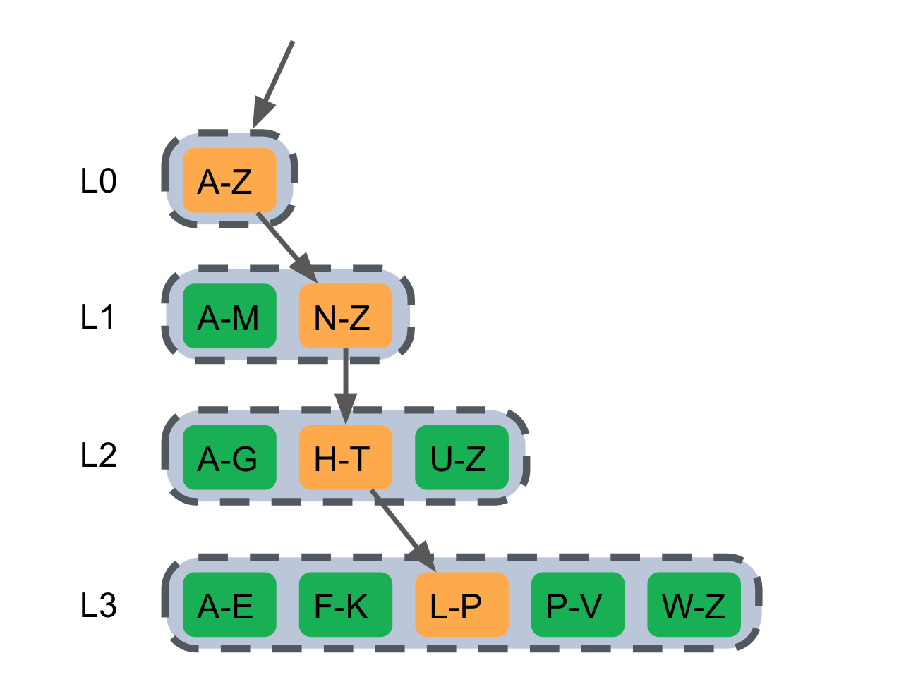
Range-lookup: Iterator
Iterator 是一个归并迭代器，是一个包含多个子 Iterator 的树结构（如下图所示），不同的子Iterator 适用 LSM 中不同的数据结构，可以简单的按照以下分类理解：
- MemTable（Mutable / Immutable）
- Block (Index Block / Data Block)，RocksDB 使用 TwoLevelIterator 读取 SST File，其中使用 first_level_iter 读取 Index Block，使用 second_level_iter 读取 Data Block 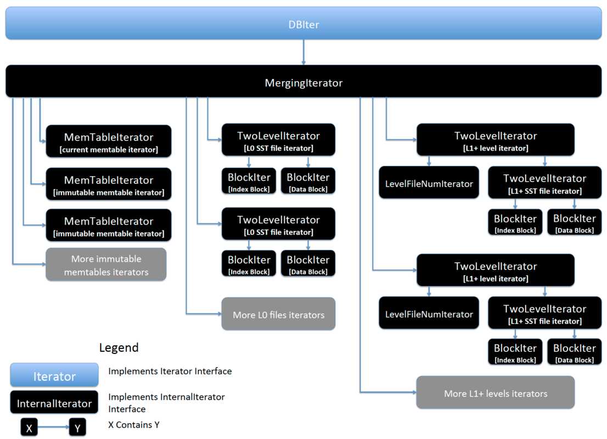
通过上面内容可以发现，不管是 Point-lookup 还是 Range-lookup 都需要读取 SST File 中的 Data Block（对于 point get, 如果在 memtable 中找到了对应值，就可以直接返回。不需要再往下扫 SST 了），如果每一个 KV 请求都需要通过 IO 从 SST File 的 Data Block 中读取数据，整个系统肯定会因为 IO 而出现瓶颈，所以 RocksDB 中有 Block Cache 在内存中缓存数据。有了以上预备知识之后，就可以来分析在读取 KV 键值对的过程中使用的系统资源，以及查看对应资源的监控信息。以上过程中主要包含：
- Block Cache，这一部分依赖 Memory，对应的监控信息有： a. Block cache size：block cache 的大小。如果将 shared-block-cache 禁用，即为每个 CF 的 block cache 的大小 b. Block cache hit：block cache 的命中率 c. Block cache flow：不同 block cache 操作的流量 d. Block cache operations 不同 block cache 操作的个数
- 读取 SST Files，这部分主要依赖 IO，对应的监控信息为： a. SST read duration：读取 SST 所需的时间
- 二分查找过程中会比较 Key 的大小，这部分依赖 CPU，对应的监控有： a. RocksDB CPU：RocksDB 线程的 CPU 使用率
以上任何一个环节出现瓶颈，都可能导致读取 KV 键值对的延迟比较高，比如 Block cache size 非常小，命中率很低，那么每次都需要通过 SST File 读取数据必然延迟会加高，如果更糟糕的情况发生，比如 IO 打满或 CPU 打满，延迟会进一步加大。
如果 Block cache 命中率小，可以通过 Block cache flow 和 Block cache operations 进一步定位 Block cache 上面发生的事件。
TiKV 如何知道需要获取哪些 KV 键值对
TiDB 通过 gRPC 发送读取请求，读相关的请求主要包含 kv_get / kv_batch_get / coprocessor 三个接口，可以通过一下监控查看请求的数量、失败数量、延迟等情况：
- gRPC message count：每种 gRPC 消息的个数
- gRPC message failed：失败的 gRPC 消息的个数
- gRPC message duration：gRPC 消息的执行时间
- gRPC poll CPU：gRPC 线程的 CPU 使用率，gRPC 线程是一个纯 CPU 的线程，不涉及 IO 操作，如果使用率过高，可以考虑调整 gRPC 线程数量，不然客户端请求会因为处理不及时导致延迟加大，此时 gRPC 会成为瓶颈
以上三个监控能对整个过程进行一个概览性的分析，如果其中某一个监控指标出现了异常，就需要进一步分析。在 TiDB 4.0 引入统一线程池之后，kv_get / kv_batch_get / coprocessor 以上这三个接口的流量分别在两个线程池执行，分别为 Storage read threads pool (kv_get / kv_batch_get 接口) 和 Coprocessor threads pool (coprocessor 接口) ，这两个线程池中都由低中高三种优先级的线程。在 TiDB 4.0 中引入了 Unified Read Pool 之后，这些请求都会在同一个线程池中执行。
接下来分别解释如何将请求发送到对应的线程池，以及各个线程池内部的执行流程。
Storage read threads pool
kv_get / kv_batch_get 比较简单，就是收到 gRPC 请求之后，根据优先级选择对应的线程池即 FuturePool，然后分发到对应的 FuturePool 之中。 当这个请求被 Pool 调度起来的之后，执行流程为：
- 从 RocksDB 获取一个 Snapshot
- 然后再在 Snapshot 上面使用 Point-lookup 获取相应的 key-value
获取 Snapshot 和通过 Snapshot 获取 KV 可以参考之前的内容。Storage read threads pool 可以通过以下监控来排查：
- Storage command duration：执行 get 命令所需花费的时间（按照之前的说明，这部分时间就是调度之后，RocksDB->GetSnapshot() + Snapshot->Get(key) 的时间总和，所以不包含调度本身花费的时间）
- Storage command total：可以查看 get 命令的数量
- Storage ReadPool CPU：线程的 CPU 使用率
比较套路的排查思路是先看一下 CPU 是不是被打满了，如果被打满了看是不是命令的数量比较多，如果 CPU 没有打满，但是 Scheduler command duration 延迟比较高，就按照获取 Snapshot 和从 Snapshot 中获取 KV 比较慢进行排查（参考前文）。
Coprocessor threads pool
Coprocessor 内部细节较多，下面进行一个简化的描述：
- TiKV 收到一个 coprocessor 的请求之后，先解析这个请求，然后根据优先级放入 Coprocessor 相应的线程池
- 请求被 Coprocessor 线程池调度起来之后，第一步先获取 Snapshot
- 然后根据 Snapshot 构建一个 Handler 用来处理这个请求 使用步骤 3 构建的 Handler 处理这个请求
在大致了解以上流程之后，Coprocessor 相关的监控就比较容易理解了：
- Coprocessor CPU：线程的 CPU 使用率
- Wait duration：请求被调度 + 获取 Snapshot + 构建 Handler 的时间总和（监控中包含 max / .99 / .95 对应的延迟） a. 请求被调度这个延迟不涉及 IO 和网络，仅仅和 CPU 的负载有关，如果 CPU 的负载不高，调度的时间应该可以忽略不计 b. 构建 Handler 的时间在 CPU 负载不高的情况也可以忽略不计 c. Snapshot 获取时间如果过长，可以按照之前的内容进行排查 d. 综上：首先应该查看 CPU 的负载情况，如果 CPU 的负载高则说明瓶颈在 CPU，否则进一步排查 Snapshot 获取慢的原因
- Handle duration: 使用 Handler 处理这个请求的时间，Handle 过程包含： a. 算子的执行依赖 CPU，可以通过 CPU 的负载来定位瓶颈是否在 CPU b. 最底层的算子 TableScan / IndexScan 需要使用 Snapshot 的 Range-lookup，如果 CPU 负载不高，但是 Handle duration 延迟高，则按照 Range-lookup 慢的问题进一步排查
除了以上比较重要的监控指标，也可以通过以下监控辅助排查：
- Request errors：下推的请求发生错误的个数，正常情况下，短时间内不应该有大量的错误
- DAG executors：DAG executor 的个数，重点看一下 TableScan 算子的数量，排查是否有大查询扫表将 CPU 资源占用
- Scan keys：每个请求 scan key 的个数，如果 Scan keys 的数量特别大，会占用大量的系统资源，导致请求的延迟变大
- Scan details：scan 每个 CF 的详细情况
- Table Scan - Details by CF：table scan 针对每个 CF 的详细情况
- Index Scan - Details by CF：index scan 针对每个 CF 的详细情况
- Table Scan - Perf Statistics：执行 table sacn 的时候，根据 perf 统计的 RocksDB 内部 operation 的个数
- Index Scan - Perf Statistics：执行 index sacn 的时候，根据 perf 统计的 RocksDB 内部 operation 的个数
Unified Read Pool
在 TiDB 4.0 中参照了多级反馈队列调度算法构建了一个新的线程池 (yatp, yet another thread pool)，并且将前面介绍的两种请求都统一到了这个线程池中进行处理，称为 Unified Read Pool。 在 Unified Read Pool 中，任务会根据优先级以及执行时长的不同被放到不同的队列中，主要目的是为了减少执行时间长、优先级低的读请求对其他请求的影响，减少延时和吞吐量的抖动。Unified Read Pool 可通过以下可以通过以下监控来排查：
- Unified ReadPool CPU：线程的 CPU 使用率
- Time used by level: 各个 level 任务的 CPU 使用时间
- Running tasks: 当前读请求的数量
TiDB 如何构造这些请求
上面描述了 TiKV 如何处理 KV 相关请求，以及各个处理环节的如何通过监控排查问题。接下来将描述一条 SQL 经过哪些步骤最终构建一个合适的请求发送到 TiKV，以及将获取到的 KV 最终映射为客户端期望的结果。为了屏蔽细节对于读者的干扰，在不影响正确性的情况下对整个主流程进行简化为如下步骤：
- 从客户端的 Socket 读取一条 SQL
- 获取一个 Token
- 从 PD 获取 TSO (异步获取，此处拿到一个 tsFuture，后续的流程中可以通过 tsFuture 结构拿到真正的 TSO)
- 使用 Parser 将 SQL parse 为 AST
- 将 AST compile 为执行计划（此过程包含很多细节，比如 Validator / LogicalPlanOptimizer / PhysicalPlanOptimizer / Executor builder 等，由于都反映在 Compile duration 的监控之中，此处合为一个步骤）
- 执行上一步得到的执行计划 a. Executor.Open()： 最底层的 Executor 会根据这条 SQL 处理的 Key 范围构建出多个要下发到 TiKV 的请求，并通过 distsql 的 API 将这些请求分发到 TiKV b. Executor.Next()：最底层的 Executor 会将 distsql 返回的数据返回给上层 Executor 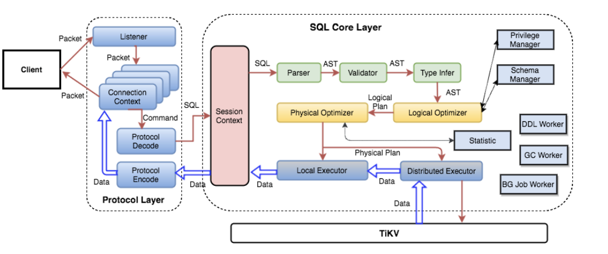
由于这一部分涉及的监控非常多且复杂，本小节先从概览到细节对监控进行梳理：
- QPS：每秒的查询数量
- Duration：SQL 执行的耗时统计
- Get Token Duration：建立连接后获取 Token 耗时
- Parse Duration：SQL 语句解析耗时统计
- Compile Duration：将 SQL AST 编译成执行计划耗时统计
- Execution Duration：SQL 语句执行耗时统计
以上几个监控可以反映一个查询的时间消耗主要是在哪个大模块，比如：
- Parse Duration / Compile Duration 是纯 CPU 操作，如果 CPU 负载不高，但是耗时比较长，大部分情况是 insert ... values 太多，Compile 高更可能的情况是带了非关联子查询。
- Get Token Duration 耗时比较高说明目前已经在执行的 SQL 达到了 TokenLimiter 的上限，具体情况可能很复杂，比如可能是简单的数量达到了上限，或则内部出现了卡死导致 Token 没有释放。
- Execution Duration 包含了 Executor 执行过程中的总耗时，内部涉及的组件比较多，后面将专门对这一部分进行解释。
- TSO 获取比较慢，相关的监控有： a. TSO RPC Duration：pd client 从发送请求到请求返回的耗时，等于网络 roundtrip 耗时 + PD 服务器处理耗时 b. TSO Async Wait：从获取 ts future，到开始 wait ts future 的耗时。反映了 TiDB 内部处理的耗时情况，一般是 parse、compile 以及 auto_increment 的 rebase。向 pd client 发送请求之后，调用者不会卡住，而是得到一个 ts future，只有 wait ts future 的时候，如果 ts future 没有准备好，才会卡住调用者 c. TSO Wait Duration：调用 wait ts future 之后等待 future 返回的耗时
TSO 获取更多细节
因为 TSO 的监控对于很多 DBA 来说比较难懂，这里专门用一个小节来进一步对内部细节做一个分析。 所有 TiDB 与 PD 交互的逻辑都是通过一个 PD Client 的对象进行的，这个对象会在服务器启动时创建 Store 的时候创建出来，创建之后会开启一个新线程，专门负责批量从 PD 获取 TSO，这个线程的工作流程大致流程如下：
- TSO 线程监听一个 channel，如果这个 channel 里有 TSO 请求，那么就会开始向 PD 请求 TSO（如果这个 channel 有多个请求，本次请求会进行 batch）
- 将批量请求而来的的 TSO 分配给这些请求
对于这些 TSO 请求，其实就被分为了三个阶段：
- 将一个 TSO 请求放入这个 channel，对应的函数为 GetTSAsync，调用这个函数会得到一个 tsFuture 对象
- TSO 线程从 channel 拿到请求向 PD 发起 RPC 请求，获取 TSO，获取到 TSO 之后分配给相应的请求
- TSO 分配给相应的请求之后，就可以通过持有的 tsFuture 获取 TSO（调用 tsFuture.Wait()）
目前系统没有对第一个阶段设置相应的监控信息，这个过程通常很快，除非 channel 满了，否则 GetTSAsync 函数很快返回，而 channel 满表示 RPC 请求延迟可能过高，所以可以通过 RPC 请求的 Duration 来进一步分析。
- PD TSO RPC Duration : 反应向 PD 发起 RPC 请求的耗时，这个过程慢有两种可能：
- TiDB 和 PD 之间的网络延迟高
- PD 负载太高，能不能及时处理 TSO 的 RPC 请求
- TSO Async Duration: 拿到一个 tsFuture 之后到调用 tsFuture.Wait() 中间的时间消耗，拿到 tsFuture 之后，后续还需要进行 SQL Parse 和 Compile 成执行计划，真正执行的时候才会调用 tsFuture.Wait()，所以这部分延迟太多，可能因为：
- 这个 SQL 很复杂，Parse 花费了很长的时间
- Compile 花费了很长时间
- PD TSO Wait Duration: 我们可能拿到一个 tsFuture 之后，很快做完 Parse 和 Compile 的过程，这个时候去调用 tsFuture.Wait()，但是这个时候 PD 的 TSO RPC 还没有返回，我们就需要等，这个时间反应的是这一段的等待时间。
- PD TSO Duration：上面整个过程的时间
所以这一块的正确分析方式是先查看整个 TSO 是否延迟过大，再去查具体是某个阶段延迟过大。
有了上面的讲解，下面用一个图来辅助理解： 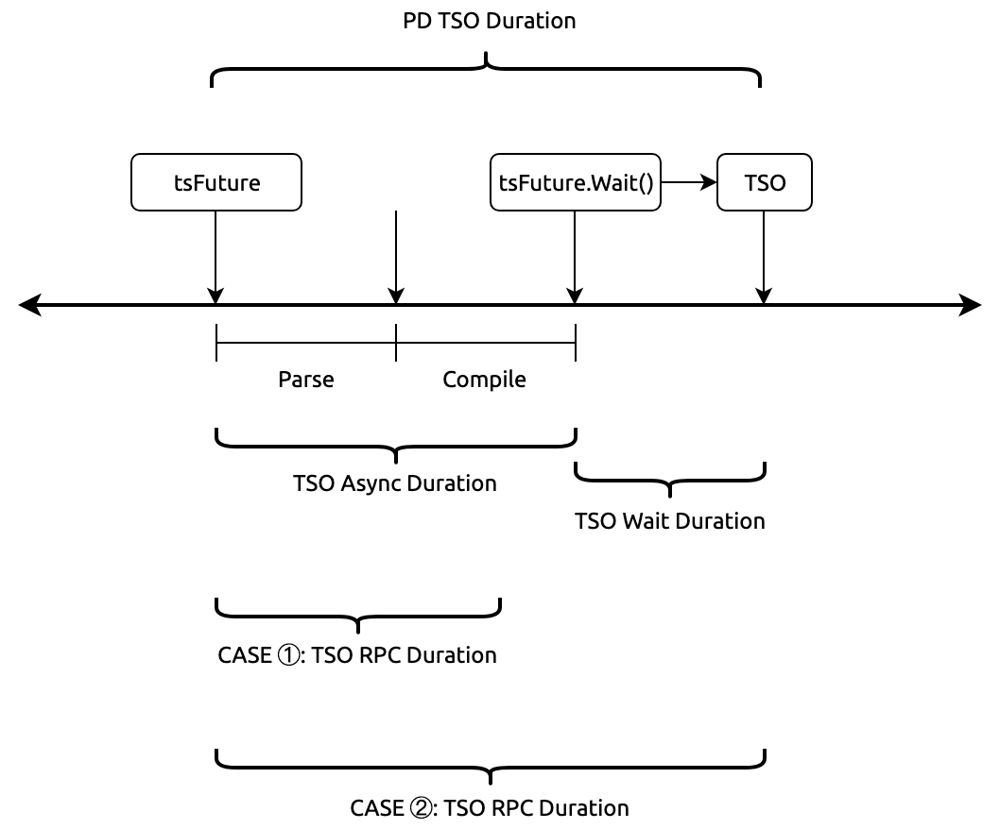
注意图中标记了两种 TSO RPC Duration 的情况，因为 TSO 是异步获取的，后台线程在异步获取 TSO 过程中，处理 SQL 的线程在进行 Parse + Compile（Parse + Compile 完成后调用异步对象 tsFuture 获取真正的 TSO，所以 TSO Async Duration = Parse + Compile Duration），两种情况分别为：
- CASE 1: TSO RPC Duration >= Parse + Compile Duration 这种情况调用 Wait 时，TSO 还未就绪，所以需要等待 RPC 返回 TSO，所以 TSO Wait Duration > 0
- CASE 2: TSO RPC Duration < Parse + Compile Duration: 这种情况调用在异步对象调用 tsFuture.Wait() 时，由于 RPC 已经返回真实的 TSO，所以 Wait Duration = 0
DistSQL 内部执行流程
distsql API 可以简单的认为包含一下几个重要步骤：
- Build Request
- Send Request
- Recv Response
- Decode Response
其中 Build Request / Decode Response 比较简单，Send Request / Recv Response 相对比较复杂，接下来先看看 Send Request 和 Recv Response 的过程，然后再分析其中各个环节可能出现的问题，以及对应的监控信息：
- Send Request 发送的过程，如下图所示 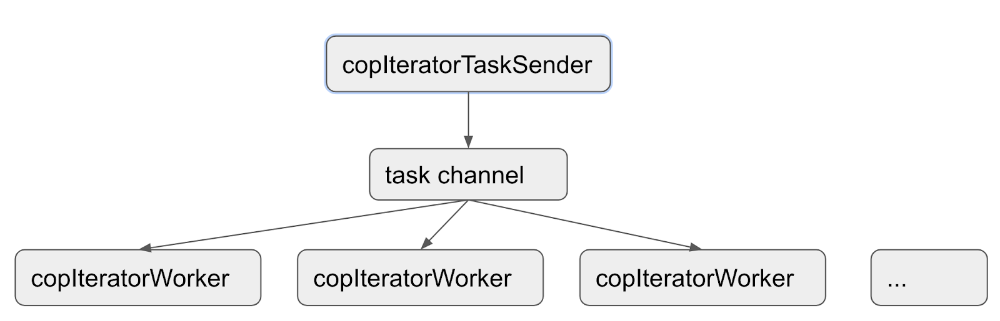 a. 首先根据请求中 Key 的范围在 RegionCache 找到对应的 Region，然后构造一个 copTask b. 根据并发配置，开启多个 copIteratorWorker goroutine c. 开启一个 copIteratorTaskSender goroutine 分发 copTask d. 各个 copIteratorWorker 并行处理 copTask（构造发往 TiKV 的请求，通过 gRPC 调用对应的接口）
- Recv Response 的接口过程分为两种情况 a. 不需要对发送请求的返回结果保持发送之前的顺序 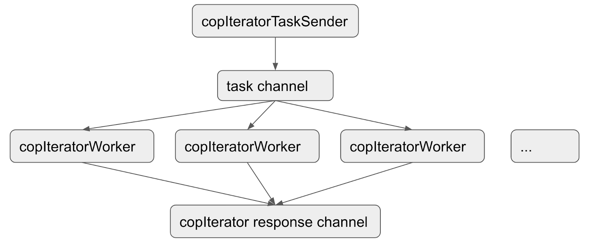 b. 需要对发送请求的返回结果保持发送之前的顺序 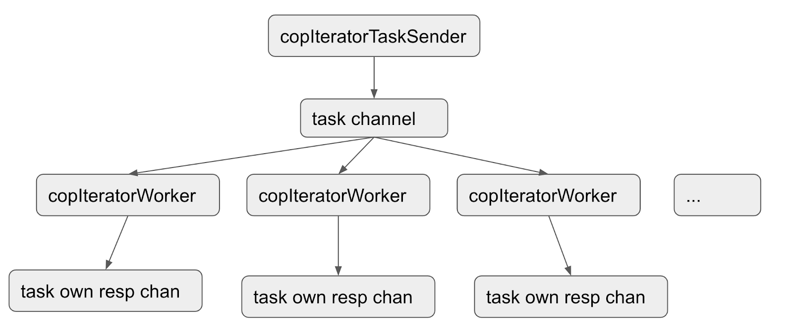
以上是对 Send Request 和 Recv Response 的流程介绍，介绍完成之后，我们就可以来看正常情况下我们需要关注哪些监控，然后再看这个过程中可能存在的异常结果，以及对应的监控。
- DistSQL
- Distsql Duration：Distsql 处理的时长
- Distsql QPS：Distsql 的数量统计
- Distsql Partial QPS：每秒 Partial Results 的数量
- Scan Keys Num：每个 Query 扫描的 Key 的数量
- Scan Keys Partial Num：每一个 Partial Result 扫描的 Key 的数量
- Partial Num：每个 SQL 语句 Partial Results 的数量
- KV Duration
- KV Request Duration 999 by store：KV Request 执行时间，根据 TiKV 显示
- KV Request Duration 999 by type：KV Request 执行时间，根据请求类型显示
- KV Cmd Duration 99/999：KV 命令执行的时间
- KV Count
- KV Cmd OPS：KV 命令执行数量统计
- KV Txn OPS：启动事务的数量统计
- Txn Regions Num 90：事务使用的 Region 数量统计
- Txn Write Size Bytes 100：事务写入的字节数统计
- Txn Write KV Num 100：事务写入的 KV 数量统计
- Load SafePoint OPS：更新 SafePoint 的数量统计
而在请求处理的过程中，TiKV 可能会返回一些错误，对于这可能出现的错误以及它们的处理方式如下：
- 如果是 Region 相关的错误（Region 发生分裂、合并、调度等），会先进行 Backoff (sleep 一小段时间)，然后进行重试，比如： a. Region 信息过期会使用新的 Region 信息重试任务 b. Region 的 leader 切换，会把请求发送给新的 Leader
- 如果部分 Key 上有锁，会进行 Resolve lock
- 如果有其他错误，则立即向上层返回错误，中断请求
错误相关的监控在 KV Errors 分类下：
- KV Retry Duration：KV 重试请求的时间
- TiClient Region Error OPS：TiKV 返回 Region 相关错误信息的数量
- KV Backoff OPS：TiKV 返回错误信息的数量（事务冲突等）
- Lock Resolve OPS：事务冲突相关的数量
- Other Errors OPS：其他类型的错误数量，包括清锁和更新 SafePoint
TiDB 拿到 KV 键值对之后如何根据 Schema 返回数据
TiDB 拿到 KV 数据可能有两种格式：
- Coprocessor 返回的 chunk 格式
- Get / Batch Get 返回的 key-value 格式
对于这两种格式，Coprocessor 返回的 chunk 格式已经从 value 中把的 column 信息提取出来了，而 Get / Batch Get 返回的 key-value 还是按照 encode 之后的字节数组，所以需要进一步 decode，大致流程如下： 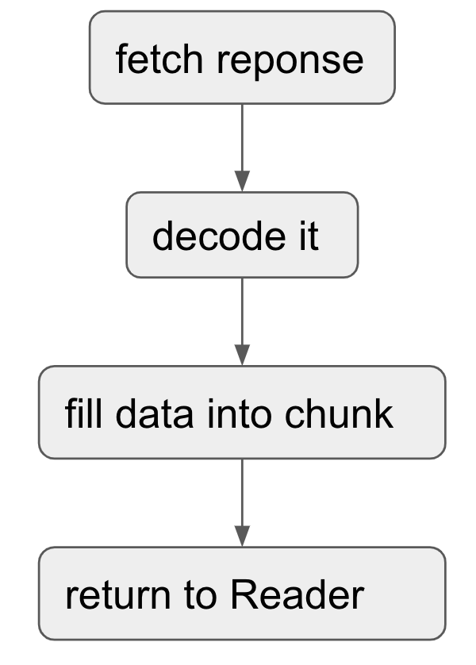
TiDB 如何把最终数据返回给客户端的
从最底层的算子一层一层向上返回，最上层的算子拿到数据之后，通过 Socket 将结果返回给客户端。
写流程
如前文所述，对于一个写入的 SQL，需要根据已经定义的 Schama 转换为 KV 键值对，并将这些 KV 键值对写入 TiKV。读与写在 TiDB 端的不同主要是最底层的 Executor，读的的层 Executor 是 TableReaderExecutor / IndexReaderExecutor / IndexLookupExecutor，这些 Exceutor 主要依赖底层的 distsql API，而写入的底层 Executor 主要是 Insert / Update / Delete，主要依赖底层的 2PC 模块。所以与读流程相似的原理和监控不在本小节重复说明。本小节主要自顶向下梳理：
- TiDB 2PC（两阶段提交）
- TiKV Scheduler
- TiKV Raftstore
TiDB 2PC
当我们在谈论两阶段提交，我们在谈论什么？
提交的是什么
写入的算子 Insert / Update / Delete 在执行过程中对于写入的数据编码为 Key-Value 并先写入事务的 In-Memory Buffer，写入的数据包含两类：
- 普通数据插入
- 索引数据插入
普通数据和索引数据使用不同的编码方式转换 Key 和 Value，如何将数据编码成对应的 Key-Value 的细节与监控以及原理无关，这一部分可以暂时忽略，统一理解为 Key-Value 即可。
两阶段提交的本质就是将 In-Memory Buffer 中的 Key-Value 通过 tikv client 写入到 TiKV 中。
如何提交
顾名思义，两阶段提交就是将事务的提交分成两个阶段：
- Prewrite
- Commit 在每个 Transaction 开启时会获取一个 TSO 作为 start_ts，在 Prewrite 成功后 Commit 前获取 TSO 作为 commit_ts，如下图： 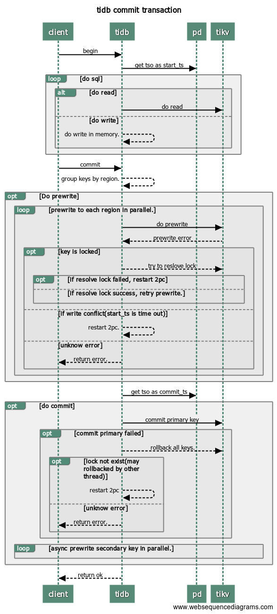
有了以上的基础认识之后，就可以进一步来看这个过程中的监控信息，以及监控信息背后所映射的信息。
本地事务冲突检测
如果配置文件中启用了本地事务冲突检测
[txn-local-latches]
enabled = true
capacity = 2048000
在 Prewrite 之前，会先在本地等待内存锁，如果冲突比较严重，等待内存锁的时间也可能比较长，具体可以参考监控：
- Local Latch Wait Duration：本地事务等待时间
事务相关监控
- Transaction 面板
- Transaction OPS：事务执行数量统计
- Duration：事务执行的时间（如果启用 Latches，则包含 Latches 的时间）
- Transaction Retry Num：事务重试次数
- Transaction Statement Num：一个事务中的 SQL 语句数量
- Session Retry Error OPS：事务重试时遇到的错误数量
- KV Count 面板
- KV Txn OPS：启动事务的数量统计
- Txn Regions Num 90：事务使用的 Region 数量统计
- Txn Write Size Bytes 100：事务写入的字节数统计
- Txn Write KV Num 100：事务写入的 KV 数量统计
- KV Errors
- KV Retry Duration：KV 重试请求的时间
- TiClient Region Error OPS：TiKV 返回 Region 相关错误信息的数量
- KV Backoff OPS：TiKV 返回错误信息的数量（事务冲突等）
- Lock Resolve OPS：事务冲突相关的数量
以上主要是 TiDB 端 2PC 的基本知识，以及需要关注的监控，接下来关注 TiKV 端。
TiKV Scheduler
Scheduler 是什么
Scheduler 可以简单的认为是包含以下两部分的一个对象：
1. 内存锁 Latches
2. 两个线程池（普通优先级 / 高优先级）
其中 Latches 的实现与 TiDB 的实现类似，都用于等锁，一个 Prewrite 和 Commit 涉及多个 Key-Value 时，只有所有的 Key 都拿到内存锁，才会真正进入 Scheduler 的线程池执行具体的写入逻辑。
而线程池内执行的具体逻辑就比较复杂，对于不同的写入请求逻辑也不一致，可以简化为：
- 获取 Snapshot
- 执行具体的命令（依赖于前一步获取到的 Snapshot ），普通优先级的线程池负责处理 Prewrite、Commit 等写入请求，而高优先级的线程池负责处理 Resolve Lock 等高优先级的任务
对于具体的命令执行，这里对于 Prewrite 和 Commit 也给出一个最简化的流程：
- Prewrite： a. 对于每一个 Key：load lock，如果这个 key 已经存在锁，则对于这个 key 返回 KeyIsLocked 错误 b. 为每一个没有被锁住的 key 新建一个锁信息（此时锁信息还在内存中） c. 如果之前已经发现有 Key 被锁住，则返回这些冲突的 Key；如果所有的 Key 都没被锁住，则将内存中的锁信息异步写入到 raftstore
- Commit a. 对于每一个 Key：load lock，这个 lock key 是在 Prewrite 的阶段写入的，如果已经不存在了，则返回 TxnLockNotFound 错误，如果存在则从锁信息中拿到 Value b. 将 Key-Value 异步写入到 raftstore
从上面的信息我们可以发现有哪些点是需要监控的：
- Scheduler 中包含两个线程池，所以需要关注这部分线程的 CPU 负载
- 当前线程池正在处理的 Command 数量
- 内存锁的等待时间
- 拿到 Snapshot 的时间
- Load lock 需要的时间
- 异步写入的时间
- Scheduler 执行一个命令的时间
Scheduler 相关监控
- gRPC
- gRPC duration：请求在 TiKV 端的总耗时（这里主要关心 Prewrite / Commit 两种类型），通过对比 TiKV 的 gRPC duration 以及 TiDB 中的 KV duration 可以发现潜在的网络问题。比如 gRPC duration 很短但是 TiDB 的 KV duration 显示很长，说明 TiDB 和 TiKV 之间网络延迟可能很高，或者 TiDB 和 TiKV 之间的网卡带宽打满了。如果 TiDB 和 TiKV 的时间能对的上，但是时间比较长，就可以进一步看是否与 Schduler Duration 是否可以对的上来排查，gRPC duration 的时间等于 gRPC 线程池将这个请求分发给 Scheduler 模块以及这个命令在 Scheduler 内部执行时间的总和。
- Scheduler
- Scheduler stage total：每种命令不同阶段的个数，正常情况下，不会在短时间内出现大量的错误
- Scheduler priority commands：不同优先级命令的个数
- Scheduler pending commands：每个 TiKV 实例上 pending 命令的个数
- Scheduler duration：等于 latch-wait duration + async-snapshot duration + load lock (all keys total) + async-write duration 的时间总和。
- Scheduler worker CPU：scheduler worker 线程的 CPU 使用率
- Scheduler latch wait duration：latch wait 延迟高的原因：
- 多个事务同时对相同的 key 进行写操作导致冲突，每一个 key 都需要等前一个事务在该 region 上的涉及到这个 key 的写请求（可能是 prewrite、commit 或者 acquire-pessimistic-lock）完成 raft 日志复制后，才能获得 latch 锁。
- Storage async-snapshot duration：请求 raft snapshot 的延迟（读之前需要取一个 snapshot）。
- Storage async-write duration：raft 写入延迟，如果发现部分延迟高，则需要通过后续 Raftstore 的部分进一步定位
- Scheduler commit
- Scheduler stage total：commit 中每个命令所处不同阶段的个数，正常情况下，不会在短时间内出现大量的错误 Scheduler command duration：执行 commit 命令所需花费的时间，正常情况下，应该小于 1s Scheduler latch wait duration：由于 latch wait 造成的时间开销，正常情况下，应该小于 1s Scheduler keys read：commit 命令读取 key 的个数 Scheduler keys written：commit 命令写入 key 的个数 Scheduler scan details：执行 commit 命令时，扫描每个 CF 中 key 的详细情况 Scheduler scan details [lock]：执行 commit 命令时，扫描每个 lock CF 中 key 的详细情况 Scheduler scan details [write]：执行 commit 命令时，扫描每个 write CF 中 key 的详细情况 Scheduler scan details [default]：执行 commit 命令时，扫描每个 default CF 中 key 的详细情况
- Scheduler prewrite
- Scheduler - prewrite
- Scheduler stage total：prewrite 中每个命令所处不同阶段的个数，正常情况下，不会在短时间内出现大量的错误
- Scheduler command duration：执行 prewrite 命令所需花费的时间，正常情况下，应该小于 1s
- Scheduler latch wait duration：由于 latch wait 造成的时间开销，正常情况下，应该小于 1s
- Scheduler keys read：prewrite 命令读取 key 的个数
- Scheduler keys written：prewrite 命令写入 key 的个数
- Scheduler scan details：执行 prewrite 命令时，扫描每个 CF 中 key 的详细情况
- Scheduler scan details [lock]：执行 prewrite 命令时，扫描每个 lock CF 中 key 的详细情况
- Scheduler scan details [write]：执行 prewrite 命令时，扫描每个 write CF 中 key 的详细情况
- Scheduler scan details [default]：执行 prewrite 命令时，扫描每个 default CF 中 key 的详细情况
总的说来，Schduler 这部分的主要工作就是拿到一个 Snapshot 然后根据这个请求的具体类型执行一些具体逻辑，比如读锁信息，然后将最终要写入的数据写入 Raftstore。所以 Scheduler 本身这部分是否达到瓶颈，一部分可以根据之前的读取流程排查获取 Snapshot 和读取锁信息这部分是否达到了瓶颈，另一部分就是查看 Scheduler worker CPU 来看是否时执行具体逻辑时 CPU 的负载比较高，如果都没有问题，那么就进入下部分 Raftstore 的写入来进一步排查。
TiKV Raftstore
下图展示 Raftstore 在 TiKV 体系中所处的层级，同一个 Region 在一个集群中有多个副本，Raftstore 可以理解为使用 Raft 协议使一个 Region 的 Key-Value 数据在多个 RocksDB 中的保持一致。 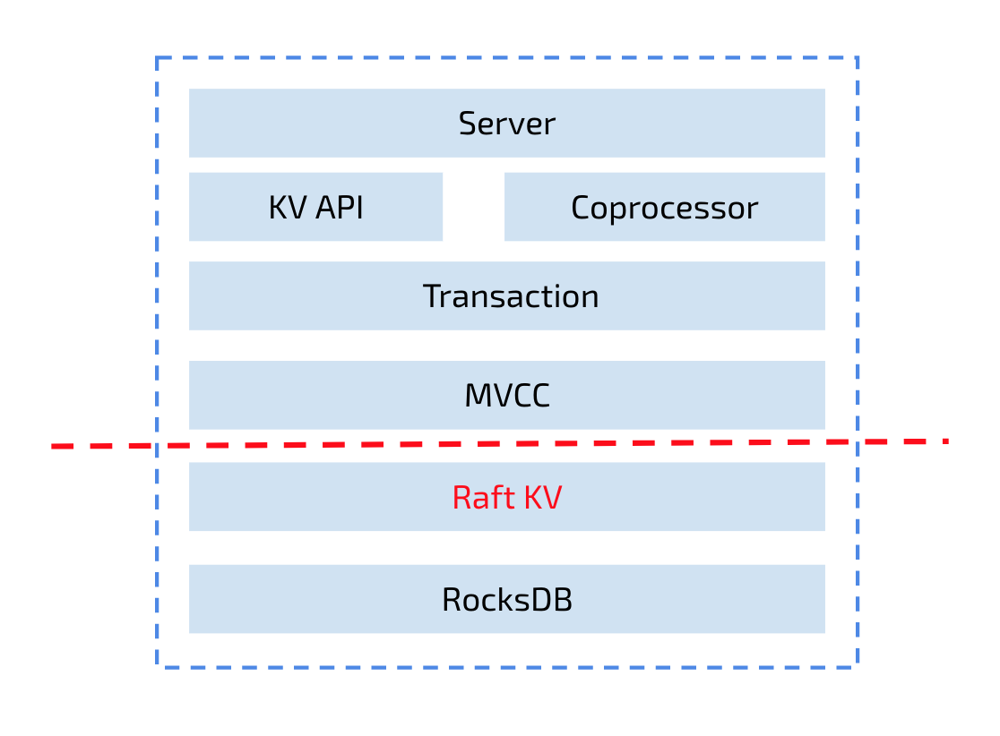 从实现上看，Raftstore 包含大量的细节，但是看监控可以简单的从以下维度理解：
- IO：两个 RocksDB 实例
- Raft RocksDB 用于保存 raft 日志
- KV RocksDB 用于保存 key-value 数据
- CPU：两个线程池（每个线程池默认为两个线程）
- raft 线程池
- apply 线程池
- Network：leader 向 follower 同步日志
上层的写入的请求会构造一个 PeerMsg::RaftCommand ，里面包含写入的 Key-Value，并将 RaftCommand 通过 Router 发送到 raft 线程池，raft 线程将 raft 日志写入到 Raft RocksDB 并同步给其他 peer，当日志提交之后，apply 线程将数据写入 KV RocksDB，整体流程如下图所示： 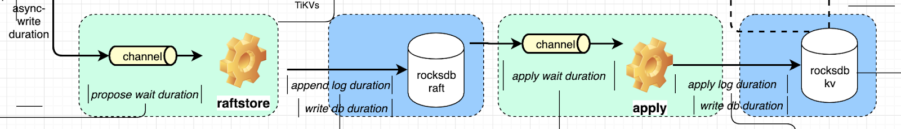
相关的监控在 TiKV dashboard 中按照 Raft IO / Raft process / Raft messages / Raft propose 分类组织（加粗的需要重点关注）：
- Thread CPU
- Raft store CPU：raftstore 线程的 CPU 使用率，通常应低于 80%
- Async apply CPU：async apply 线程的 CPU 使用率，通常应低于 90%
- Raft propose
- Raft proposals per ready：在一个 mio tick 内，所有 Region proposal 的个数
- Raft read/write proposals：不同类型的 proposal 的个数
- Raft read proposals per server：每个 TiKV 实例发起读 proposal 的个数
- Raft write proposals per server：每个 TiKV 实例发起写 proposal 的个数
- Propose wait duration：发送请求给 raftstore，到 raftstore 真正处理请求之间的延迟。如果该延迟比较长，说明 raftstore 比较繁忙或者 append log 比较耗时导致 raftstore 不能及时处理请求
- Apply wait duration：committed raft log 发送给 apply 线程到 apply 线程真正 apply 这些 log 之间的延迟。如果该延迟比较高说明 apply 线程比较繁忙。需要查看是否是因为 apply CPU 过高导致的或者由于磁盘负载比较高导致的。
- Propose wait duration per server：每个 TiKV 实例上每个 proposal 的等待时间
- Raft log speed：peer propose 日志的速度
- Raft IO
- Apply log duration：Raft apply 日志所花费的时间，执行 raft log 的耗时。apply log 是指把用户数据写入到 kvdb。
- Apply log duration per server：每个 TiKV 实例上 Raft apply 日志所花费的时间
- Append log duration：Raft append 日志所花费的时间，写 raft log 的耗时。把 raft log 写入到 raftdb 中，建议小于 50ms，如果延时比较高，进一步排查 Raft RocksDB 慢的问题
- Append log duration per server：每个 TiKV 实例上 Raft append 日志所花费的时间
- Raft message
- Sent messages per server：每个 TiKV 实例发送 Raft 消息的个数
- Flush messages per server：每个 TiKV 实例持久化 Raft 消息的个数
- Receive messages per server：每个 TiKV 实例接受 Raft 消息的个数
- Messages：发送不同类型的 Raft 消息的个数
- Vote：Raft 投票消息发送的个数
- Raft dropped messages：丢弃不同类型的 Raft 消息的个数
RocksDB
TiKV 中所有的持久化数据都会写入到 RocksDB 中，每个 TiKV 都会创建两个 RocksDB 实例：
- Raft RocksDB: 负责存储 Raft Log
- KV RocksDB: 负责存储 KV 数据以及 Region 的元信息
RocksDB 是一个 LSM 结构，写入的文件被分为多个不同的 level，其写入过程以及相关的监控有：
- 数据写入 Memtable 中，同时也会写入 WAL
- Memtable size：每个 CF 的 memtable 的大小
- WAL sync operations：sync WAL 操作的个数
- WAL sync duration：sync WAL 操作的耗时
- Write operations：write 操作的个数
- Write duration：write 操作的耗时
- Write flow：不同写操作的流量
- 当 Memtable 到达大小上限时，会转换为 Immutable Memtable，异步刷入持久化设备中，最初写入的文件被放到第一个 level 中 (level0)
- 当持久化设备中的文件到达设定的条件时，会进行 Compaction，重新组织数据
- Compaction operations：compaction 和 flush 操作的个数
- Compaction duration：compaction 和 flush 操作的耗时
- Compaction flow：compaction 相关的流量
- Compaction pending bytes：等待 compaction 的大小
当 level0 文件数量 / Memtable 数量 / 等待 compaction 的数据大小到达上限时，会触发 RocksDB 的流控机制，称为 Write Stall，导致写入速度变慢或者停止写入，其相关的监控有：
- Write stall duration：由于 write stall 造成的时间开销，正常情况下应为 0
- Stall conditions changed of each CF：每个 CF stall 的原因